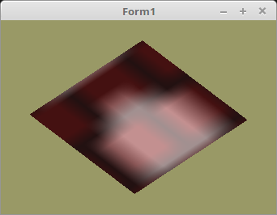

07 - Texturen
30 - Multitexturing

Multitexturing, tönt Anfangs sehr kompliziert, aber im Grunde ist es sehr einfach.
Der Unterschied zu einer einzelnen Textur ist, das man mehrere Texturen über die Mesh zieht.
Somit muss man auch mehrere Texturen beim Zeichenen mittels glActiveTexture(... aktivieren.
Hier im Beispiel, ist es ein Stück Mauer, welches mit einer Lampe angeleuchtet wird.
Die Textur-Puffer deklarieren, sehr einfach geht dies mit einer Array.
var
Textur: array [0..1] of TTexturBuffer;
Textur-Puffer erzeugen und Shader vorbereiten.
Die Textur-Sampler muss man durchnummerieren.
procedure TForm1.CreateScene;
begin
Textur[0] := TTexturBuffer.Create;
Textur[1] := TTexturBuffer.Create;
Shader := TShader.Create([FileToStr('Vertexshader.glsl'), FileToStr('Fragmentshader.glsl')]);
with Shader do begin
UseProgram;
Matrix_ID := UniformLocation('mat');
glUniform1i(UniformLocation('Sampler[0]'), 0); // Dem Sampler[0] 0 zuweisen.
glUniform1i(UniformLocation('Sampler[1]'), 1); // Dem Sampler[1] 0 zuweisen.
end;
Mit diesr Klasse geht das laden einer Bitmap sehr einfach.
Man kann die Texturen auch von einem TRawImages laden.
procedure TForm1.InitScene;
begin
Textur[0].LoadTextures('mauer.xpm');
Textur[1].LoadTextures('licht.xpm');
Da man bei Multitexturing mehrere Sampler braucht, muss man mitteilen, welche Textur zu welchen Sampler gehört.
Dies macht man mit glActiveTexture(..., Dazu muss man als Parameter die Sampler-Nr + GL_TEXTURE0 mitgeben.
Das sieht man auch gut in der TTexturBuffer Class.
procedure TTexturBuffer.ActiveAndBind(Nr: integer);
begin
glActiveTexture(GL_TEXTURE0 + Nr);
glBindTexture(GL_TEXTURE_2D, FID); // FID ist Textur-ID.
end;
procedure TForm1.ogcDrawScene(Sender: TObject);
begin
glClear(GL_COLOR_BUFFER_BIT);
Textur[0].ActiveAndBind(0); // Textur 0 mit Sampler 0 binden.
Textur[1].ActiveAndBind(1); // Textur 1 mit Sampler 1 binden.
Die beiden Texturen am Ende wieder frei geben.
procedure TForm1.FormDestroy(Sender: TObject);
begin
Textur[0].Free; // Texturen frei geben.
Textur[1].Free;
Vertex-Shader:
#version 330
layout (location = 0) in vec3 inPos; // Vertex-Koordinaten
layout (location = 10) in vec2 inUV; // Textur-Koordinaten
uniform mat4 mat;
out vec2 UV0;
void main(void)
{
gl_Position = mat * vec4(inPos, 1.0);
UV0 = inUV; // Textur-Koordinaten weiterleiten.
}
Fragment-Shader:
Bei diesem einfachen Beispiel werden einfach die Pixel der Textur addiert und anschliessend duch 2 geteil.
#version 330
in vec2 UV0;
uniform sampler2D Sampler[2]; // 2 Sampler deklarieren.
out vec4 FragColor;
void main()
{
FragColor = (texture( Sampler[0], UV0 ) + // Die beiden Farben zusammenzählen und anschliessend durch 2 teilen.
texture( Sampler[1], UV0 )) / 2.0;
}
mauer.xpm:
/* XPM */
static char *XPM_mauer[] = {
"8 8 2 1",
" c #882222",
"* c #442222",
"********",
"* * ",
"* * ",
"* * ",
"********",
" * * ",
" * * ",
" * * "
};
licht.xpm:
/* XPM */
static char *XPM_mauer[] = {
"8 8 2 1",
" c #882222",
"* c #442222",
"********",
"* * ",
"* * ",
"* * ",
"********",
" * * ",
" * * ",
" * * "
};